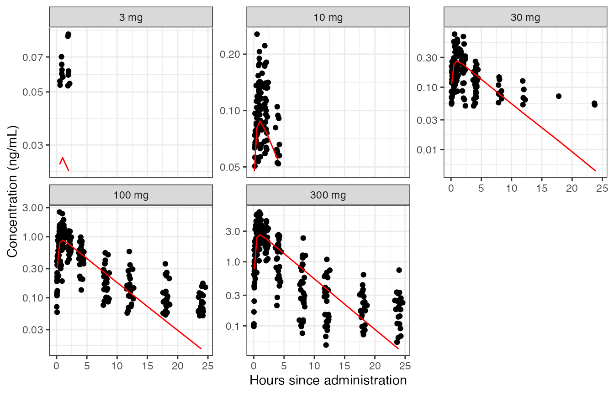

Automated and general reader of Nonmem data
NMscanData.RmdBuilt 2021-06-14 using NMdata 0.0.7.2.908.
Introduction
Preparing data for analysis in Nonmem and reading the results back into R can be time consuming. After a Nonmem run, a few tables may have to be combined. Then we need character variables that are only available in the input data file. And maybe the events ignored by Nonmem (say, observations below quantification limit that we still need in further analysis and plotting).
This vignette focuses on how to use NMdata to automate what needs to be trivial: get a dataset out of a Nonmem run, including discarded columns and rows from the input data. In brevity, the most important steps are
- Read and combine output tables
- If wanted, read input data and restore variables that were not output from the Nonmem model
- If wanted, also restore rows from input data that were disregarded in Nonmem (e.g. observations or subjects that are not part of the analysis)
In most cases, this is not too hard to do. But with the large degree of flexibility Nonmem offers, the code will likely have to be adjusted between models, and there are a lot of caveats to be aware of. The implementation in NMdata works for the vast majority of models and aims at preventing and checking for as many caveats as possible. It is fast and default argument values can be configured depending on your setup (data standards, directory structure and other preferences).
Like the rest of NMdata, this functionality assumes as little as possible about how you work. It assumes nothing about the Nonmem model itself and as little as possible about the organization of data and file paths/names. This makes it powerful for meta analyses, for reading a model developed by someone else - or one written by ourselves when we used to do things slightly differently. It will work out of the box in the vast majority of cases.
We start by attaching NMdata. I’m a data.table user and use that for a few postprocessing steps. You can just as well use base R or dplyr if you prefer. Then ggplot2 for illustrations.
library(NMdata)
#> Welcome to NMdata. Best place to browse NMdata documentation is
#> https://philipdelff.github.io/NMdata
## not necessary for NMdata to run, but we use thse in the examples
library(data.table)
library(ggplot2)
theme_set(theme_bw()+theme(legend.position="bottom"))For the examples we will be using files that are available in the NMdata package. To type a little less, we use this shortcut function:
file.NMdata <- function(...) system.file(file.path("examples/nonmem",...), package="NMdata")Get started
Try NMscanData on any model:
res0 <- NMscanData(file.NMdata("xgxr017.lst"))
#> Model: xgxr017
#> Input and output data combined by translation of
#> Nonmem data filters (not recommended).
#>
#> Used tables, contents shown as used/total:
#> file rows columns IDs
#> xgxr017_res.txt 905/905 15/15 150/150
#> xgxr4.csv (input) 905/1502 22/23 150/150
#>
#> Distribution of rows on event types in returned data:
#> EVID Output
#> 0 755
#> 1 150NMscanData tells that it has read a model called xgxr017 and how output and input data were combined. We shall see how these properties can be modified in a bit. Then follows an overview of how much data is used from the data files that were read. It used
- one output data file (based on the
$TABLEsection(s) in the.lstfile) from which it used all 905 rows and all 15 column, totalling 150 different values ofID. - the input file, but only 905 out of 1502 rows and 22 out of 23 columns. Input data did not contain any ID’s that weren’t used.
In the resulting data, 755 out of the 905 rows are EVID==0, the remaining 150 rows are EVID==1.
Let’s take a quick look at key properties of the data that was returned. It’s a data.frame with the additional NMdata class (for now, we just use it as a data.frame).
The data used for the example is a PK single ascending dose data set, great thanks to the xgxr package authors.
The obtained dataset contains both model predictions (i.e. from output tables) and a character variable, trtact (i.e. from input data). To the .lst (output control stream) file path was supplied by us.
head(res0,n=2)
#> ID NOMTIME TIME EVID CMT AMT DV FLAG STUDY TVKA TVV2 TVCL TVV3
#> 1 31 0 0 1 1 3 0 0 1 0.1812 0.042 0.72457 0.17848
#> 2 32 0 0 1 1 3 0 0 1 0.1812 0.042 0.72457 0.17848
#> TVQ KA V2 CL V3 Q IPRED PRED RES WRES BLQ CYCLE
#> 1 2307400 0.1812 0.042 0.72457 0.17848 2307400 0 0 0 0 0 1
#> 2 2307400 0.1812 0.042 0.72457 0.17848 2307400 0 0 0 0 0 1
#> DOSE PART PROFDAY PROFTIME WEIGHTB EFF0 EVENTU NAME TIMEUNIT TRTACT
#> 1 3 1 1 0 87.031 56.461 mg Dosing Hours 3 mg
#> 2 3 1 1 0 100.620 45.096 mg Dosing Hours 3 mg
#> flag trtact model nmout
#> 1 Dosing 3 mg xgxr017 TRUE
#> 2 Dosing 3 mg xgxr017 TRUEYou may have noticed that when reading the model, we were told that 37 columns were read while 39 columns are found in the result. The reason is the last two columns added by NMscanData called model and nmout. model obviously contains the name of the model which is by default derived from the list file name. See later in the “Recover rows” section what nmout represents.
Use a unique row identifier and get your preferred data class back
Above, we were told that “Input and output data combined by translation of Nonmem data filters (not recommended).” Because of the very commonly used ACCEPT and IGNORE statements in Nonmem $DATA sections, the rows in output tables are often a subset of the input data rows. If no other information is available, NMscanData reads and interprets the ACCEPT or IGNORE statements and applies them to the input data before combining with the output data.
A more robust approach is using a unique row identifier in both input data and output data. NMscanData can use this for merging the data. This means that the ACCEPT or IGNORE are not interpreted at all. Even though NMscanData should work even without, it is always recommended to always include a unique row identifier in both input and output tables (in fact, we just need it in one full-length output table).
The following model happens to have such a unique row identifier in the column called ROW. The default NMscanData behavior is to use the row identifier if it can find it. The name of the column with the row identifier can be supplied using the col.row argument (and the default can be changed using the NMdataConf function). The default is to look for ROW.
All features shown below will work whether you supply col.row or not. We use col.row because it is more robust and because it allows us to easily trace a row in the analysis back to the source data. We are now told that the data was merged by ROW - that’s better.
res0 <- NMscanData(file.NMdata("xgxr003.lst"),as.fun=tibble::as_tibble)
#> Model: xgxr003
#> Input and output data merged by: ROW
#>
#> Used tables, contents shown as used/total:
#> file rows columns IDs
#> xgxr003_res.txt 905/905 7/7 150/150
#> xgxr003_res_vols.txt 905/905 3/7 150/150
#> xgxr003_res_fo.txt 150/150 1/2 150/150
#> xgxr1.csv (input) 905/1502 21/24 150/150
#>
#> Distribution of rows on event types in returned data:
#> EVID Output
#> 0 755
#> 1 150We also added the as.fun argument. the “as.” refers to as_tibble, as.data.frame, as.data.table etc. - a function applied to the data before it’s returned by NMscanData (or any other NMdata function). So now we have a tibble:
class(res0)
#> [1] "NMdata" "tbl_df" "tbl" "data.frame"I happen to be a data.table user so I am more comfortable working that way. Instead of using the as.fun all the time, we will change the default behavior using the NMdataConf function. Because NMdata is implemented in data.table we don’t need to pass the data.table::as.data.table function but we can (better) use the string "data.table" (again, data.table is the exception - for anything else, please pass a function):
NMdataConf(as.fun="data.table")Notice, NMdataConf will set the default value for all NMdata functions that use that argument. So when setting as.fun this way, we will get the desired class returned from all data generating NMdata functions.
We don’t want the same information about the dimensions repeated, so we use the quiet argument this time.
res1 <- NMscanData(file.NMdata("xgxr003.lst"),quiet=TRUE)As expected we got a data.table this time:
class(res1)
#> [1] "NMdata" "data.table" "data.frame"Results
Let’s have a quick look at the data we got back. The following is done with data.table. The comments in the code should make it clear what happens if you are not familiar with data.table. You can do this with base::tapply, stats::aggregate, a combination of dplyr::group_by and dplyr::summarize, or whatever you prefer.
gmPRED is calculated for sample times only and represents the geometric mean of population prediction (PRED) by dose and nominal time.
## trtact is a character. Make it a factor with levels ordered by
## numerical dose level. The := is a data.table assignment within
## res3. In dplyr, you could use mutate.
res1[,trtact:=reorder(trtact,DOSE)]
## Derive geometric mean pop predictions by treatment and nominal
## sample time. In dplyr, use group_by, summarize, and ifelse?
res1[EVID==0,gmPRED:=exp(mean(log(PRED))),
by=.(trtact,NOMTIME)]
Notice, how little data is shown on the small doses. Remember, only 905 of the 1502 rows in the input data were used? Most of the rows excluded in the analysis are so due to observation being below the quantification limit (BLQ). The next section shows how to recover all the input data rows with NMscanData.
More options and features
Recover rows
We may want to include the input data that was ignored by Nonmem. Use recover.rows=TRUE to include all rows from input data.
res2 <- NMscanData(file.NMdata("xgxr014.lst"),recover.rows=TRUE)
#> Model: xgxr014
#> Input and output data merged by: ROW
#>
#> Used tables, contents shown as used/total:
#> file rows columns IDs
#> xgxr014_res.txt 905/905 12/12 150/150
#> xgxr2.rds (input) 1502/1502 22/24 150/150
#>
#> Distribution of rows on event types in returned data:
#> EVID Input only Output
#> 0 597 755
#> 1 0 150Besides the model column holding the model name, NMscanData creates one other column by default. nmout is a boolean column created by NMscanData expressing whether each row was in the output data (nmout==TRUE) or they were recovered from the input data (nmout==FALSE).
We recognize these numbers from the message from NMscanData - the number of rows in output (905) and number of rows from input only (597).
res2[,.N,by=nmout]
#> nmout N
#> 1: TRUE 905
#> 2: FALSE 597We make use of the nmout column to only calculate gmPRED for observations (EVID==0) processed by Nonmem.
## add geometric mean pop predictions by treatment and nominal sample
## time. Only use sample records.
res2[EVID==0&nmout==TRUE,
gmPRED:=exp(mean(log(PRED))),
by=.(trtact,NOMTIME)]
Obviously, we were lucky that meaningful values were assigned to DV for the BLQ and pre-dose samples in input data, so we in this case could easily plot all the data.
Combine multiple models
NMscanData by default adds a column called model for convenience when working with multiple models. You can specify both column name and content as arguments in NMscanData. You can also configure the default column name and the function that generates the column content by NMdataConf. If you don’t, the column will be called model, and the model name taken from the lst file name (say, xgxr001). In the following we use this to compare population predictions from two different models. We read them again just to show the use of the argument to name the models ourselves. Remember, we configure NMdata’s as.fun option so we are working with data.table and we easily stack with rbind (rbind.data.table) filling in NA’s. We add a couple of options to specify how input and output data are to be combined.
NMdataConf(as.fun="data.table")
NMdataConf(col.row="ROW")
NMdataConf(merge.by.row=TRUE)
## notice fill is an option to rbind with data.table
res1.m <- NMscanData(system.file("examples/nonmem/xgxr001.lst", package="NMdata"),
quiet=TRUE,modelname="Two compartments")
res2.m <- NMscanData(system.file("examples/nonmem/xgxr014.lst", package="NMdata"),
modelname="One compartment",
quiet=TRUE)
res.mult <- rbind(res1.m,res2.m,fill=T)
## Notice, the NMdata class disappeared
class(res.mult)
#> [1] "data.table" "data.frame"
res.mult[EVID==0&nmout==TRUE,
gmPRED:=exp(mean(log(PRED))),
by=.(model,trtact,NOMTIME)]
Preserve all input data properties - use rds
Return to the example above creating the dataset dat2. Notice in the list of tables in the message from NMscanData, that input data is a .rds file. This is why we could sort the plots correctly on the dose level without reordering the factor levels first.
res2[,class(trtact)]
#> [1] "factor"
res2[,levels(trtact)]
#> [1] "Placebo" "3 mg" "10 mg" "30 mg" "100 mg" "300 mg"If the argument use.rds is TRUE, NMscanData will look for an rds file next to the input data file (which is a delimited text file) the exact same name as the text file except the extension must be .rds rather than say .csv (for Nonmem and NMscanData, the extension of the delimited text file doesn’t matter). If it finds the rds file, this will be used instead. No checks are done of whether the contents are similar in any way to the delimited text file which is ignored in this case.
There are three advantages of using rds files:
- All attributes are kept. This includes column classes and factor levels.
- Reading speed may be improved (NMdata uses
freadfromdata.tablewhich is extremely fast for delimited files so in many cases this difference can be small). - File sizes are greatly reduced from text to
rds. This can be a big advantage if you are transfering files or reading over a network connection.NMdatais generally very fast (thanks todata.table) so file/network access (I/O) is likely to be the main bottleneck.
If you write Nonmem datasets with the NMdata::NMwriteData, you can get an rds file automatically, exactly where NMscanData will look for it. Creating datasets using NMdata is described in this vignette.
What exactly will NMscanData return?
So far, the merge has been very straightforward, but in many situations, choices are made by NMscanData. The following main principles are followed:
- Output data prevails over input data
- Row-specific output data is preferred over ID-level (
FIRSTONLYorLASTONLY) tables - Output tables are prioritized by their order of apperance
- Input data is as defined in the
$INPUTsection in Nonmem. This includes renaming of columns while columns that are dropped in Nonmem (DROPorSKIP) are included byNMscanData. Columns that are not included in$INPUTare named as in the input data file. - If rows are being recovered from input data (the
recover.rowsargument), no information from output is merged onto these rows. - The primary aim is to return the output data. If input and output cannot be meaningfully combined (very rare), output will be returned.
Notice that the summary text printed to the R terminal by NMscanData tells how many columns are included from the available tables. Also, within the resulting object, you can find a detailed table of all variables available, and whether they are included or not.
print(attributes(res1.m)$meta$variables,topn=3)
#> NULL
Reading data with automatically combining it - the NMscaData building blocks
Each of the steps involved in reading and combining the data from a model run can be done separately.
The lst file was scanned for output tables, and they were all read (including interpreting the possible firstonly option). The input data has been used based on the $DATA and $INPUT sections of the control stream. The key steps in this process are available as independent functions.
NMreadTab: Read an Nonmem output table based on the path to the output table file.NMscanTables: Read all output data files defined in a Nonmem run. Return a list of tables (as data.frames or data.tables).NMtransInput: Read input data based on a Nonmem file. Data will be processed and named like the Nonmem model.ACCEPTandIGNOREfilters can be applied as well. There are a few limitations to this functionality at this point. More about them below.
What should I do for my models to be compatible with NMscanData?
The answer to this should be as close to “nothing” as possible - that’s more or less the aim of the function. You just have to make sure that the information that you need is present in input data and output data. No need to output information that is unchanged from input, but make sure to output what you need (like IPRED, CWRES, CL, ETA1 etc which cannot be found in input). Some of these values can be found from other files generated by Nonmem but notice: NMscanData uses only input and output data.
It is recommended to always use a unique row identifier in both input and output data. This is the most robust way to merge back with input data. In firstonly tables, include the subject ID. Again, everything will most likely work even if you don’t, I personally don’t like relying on “most likely” when I can just as well have robustness.
Limitations
Even if there are a few limitations to what models NMscanData can handle, there is a good chance you will never run into any of them, as they are mostly quite rare. If you do, reach out to me, and we’ll figure it out.
Input data file must exist and be unmodified since model run
If merging with input data, the input data must be available as was when the model was run. If you want to avoid this potential issue, Nonmem can be run in a wrapper script that either copies the input data, or runs NMscanData and saves the output in a compressed file format (like rds or zip).
Not all data filter statements implemented
Nested ACCEPT and IGNORE statements are not supported at this point. The resulting number of rows after applying filters is checked against row-level output table dimensions (if any available). In other words, you have to be unlucky to run into trouble without an error. But it is always recommended to use a unique row identifier in both input and output tables in order to avoid relying on interpretation of Nonmem code.
The RECORDS and NULL options in $DATA are not implemented. If using RECORDS, please use the col.row option to merge by a unique row identifier.
Character time variables not interpreted
Nonmem supports a clocktime input format for a column called TIME in input data. Based on a day counter and a character (“00:00”) clock format, Nonmem (or rather, NM-TRAN) can calculate the individual time since first record. This behaviour is not mimicked by NMscanData, and the only ways to get TIME in this case are to either include it in an output TABLE or to code the translation yourself after calling NMscanData. Of course, this is on the todo list.
Some TABLE options not supported
For now, only output tables returning either all rows or one row per subject can be merged with input. Tables written with options like FIRSTLASTONLY (two rows per subject) and OBSONLY are disregarded with a warning (you can read them with NMscanTables). LASTONLY is treated like FIRSTONLY, i.e. as ID-level information if not available elsewhere.
Custom naming of input and output control streams
By default, NMscanData expects a PSN-style naming of input and output control streams. This means that if the input control stream is called model.mod, the returned control stream is called model.lst. If you use a different setup, you can use the file.mod argument. Do one of the following if needed:
- Explicitly give the path to the input control stream or
- Pass a function that translates from the output control stream to the input. Example if the input is called
input.txtand the output is calledoutput.txt:
out2in <- function(file) file.path(dirname(file),"input.txt")
res <- NMscanData("path/to/output.txt",file.mod=out2in)You can use NMdataConf to configure the default behaviour to match your setup:
NMdataConf(file.mod=out2in)